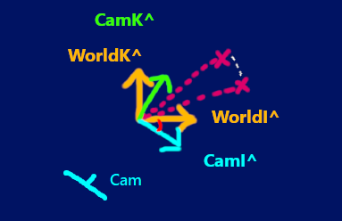
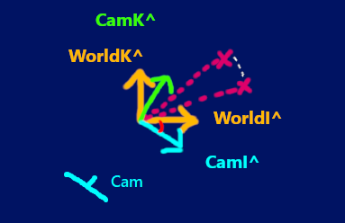

Ruff Engine DC-1 Introduction
Welcome! This is a brief introductory page to illustrate the base concepts behind Ruff Engine DC-1 and my motivation to
create it. DC Stands for Dynamic Camera.
You are right now in an underground dungeon of my website. I commend your bravery in entering this place.
There is a special navigation menu on the left that is not accessible within the
main level. This branch lists out the lore and theory behind Ruff Engine DC-1.
This is my own personal implementation of a 3D engine (Concept wise and code wise). I've created a set of geometric
mechanics that are strung together to simulate the experience of a camera moving through a three dimensional world.
I wanted to get as intimate and barebones as possible with the math. After watching a few 3D Engine tutorials online, I
noticed that most of them involved using transformation matrices and other math functions as black boxes - Where you
understood what their function was……to manipulate values based on parameters we feed into it. But it was no fun to use
something if you didn't know how it worked and what exactly it did underneath.
So instead, I did some revision of vectors and linear transformation. I watched the 'Essence Of Linear Algebra'
series by 3Blue1Brown as
well as some Robotics lectures by Angela Soddman, which all explained a deep intuition level understanding of
vectors,
projection and what exactly it means to rotate vectors.
Process
Using those basic concepts, I was able to build Ruff Engine SC-1 (Which was just a static camera showing vectors
rotating about an axis)(). From there, I felt like I knew enough to evolve that into something that will simulate movement
(from the camera's point of view). And so it began. My main highlight here is the conceptual blueprint design of the
engine (which can be applied to any programming language). I chose Javascript for this project since its a nice high level language apt for rapidly testing ideas.
My program does not "abstractify" any of the logic behind the functions. At no point will you feel like you're just
dealing with the formalities of math and not knowing what's truly going on. You will be able to follow and track all the
action in a way that feels as natural as eating Pi.
I also approach the concept of camera rotations (specifically combining camera rotations) in a my own unique way. I break down the diagram into components and individually operate on them in sequence. And I detail
out the logic behind how I derived that sequence.
Base Knowledge
If you know your basic trigonometry (SOH CAH TOA), and a basic intuitive understanding of vectors, you're good to go!
I highly recommend watching 3Blue1Brown's 'Essence Of Linear Algebra' series on Youtube. It's a short series of lectures that explain
the intuition behind linear transformations.
The concept of projection
A Top-Down View Oriented Case Example:
For the sake of simplicity, let's consider the 3D world, looking at it from the Top.
Pretend you already have a camera existing within a 3D environment that is directly positioned behind a translucent cube (with its edges visible) and
looking straight ahead at it.

Now pretend that you orbit this camera leftwards around this cube. If you imagine what the camera would be seeing, you can imagine
that as we orbit, the left side of the cube now comes into our camera's view.
How would we program this phenomenon? Where different parts of the cube become visible based on which angle we are looking at it from?

By projection. Pretend that light is shooting from the points. But the only rays we're concerned about is the light that is directly hitting our
camera screen at a perpendicular angle.
This is a way of the camera making sense of the world around it and seeing things from its perspective. Notice how in the first frame,
it appears as though there are 2 projection rays. There are actually 4 points, but since the camera is perfectly aligned with it, we are getting
what appears to be 2 rays hitting the screen
And then when we orbit around it, notice how all 4 points are now coming into view and 4 rays are hitting the screen.
Also notice the gap between the rays in the first frame. You can see how as we orbit around, this gap would get smaller (as well as additional gaps appearing since more of the points are now visible).
These are the transformations that create that illusion of a 3D object moving around in space.
In order to drive all the points(vectors) in our world through these transformations, we need to a dynamic set of unit vectors that rotate about an axis.
All of the points(vectors) in our 3D world should be oriented with these. As the camera turns, these unit vectors simply rotate along with the camera. And all the vectors
in our scene then get redrawn and oriented with the new position of these unit vectors.
I have called these unit vectors the 'CamHats'. In Ruff Engine DC-1, we have 2 sets of unit vectors. The CamHats (which are mobile) and the WorldHats (which are fixed).
The CamHats
The CamHats are the set of unit vectors (I^, J^ and K^) that are linked to the camera's orientation in the world.
The angle at which the camera is facing (The Rotation Orientation (RO)) will decide the angle of the CamHats. Think of
the CamHats
as a well oiled mechanical pulley system that moves in conjunction with the camera's twists and turns. Whatever
direction the camera
turns in, it will always face the camera. Note that the position of it's origin however, is fixed at the same spot as
the origin of the world.
It's only it's rotation that keeps changing.
Note that the camera's rotation orientation is on 2 levels:
- Horizontal rotation orientation (HorzRO or HRO) which tracks rotation on XZ plane
- Vertical rotation (VertRO or VRO) which tracks rotations on the YZ plane
The CamHats will be aligned to both of these orientations.
Purpose: It is necessary to have two different sets of unit vectors existing within the 3D world. The other set of unit
vectors (apart from the CamHats) is called
the WorldHats (Which has its own I^, J^ and K^). These WorldHat unit vectors are static. They do not move with the
camera. The discrepency between
the CamHats and The WorldHats is what is responsible for creating the projection of the world onto the camera's screen.
If you place the camera with a 0 HRO and 0 VRO configuration, the CamHats will be directly in line with the WorldHats.
The cam will see the world directly
on one axis. When you start to rotated the camera, all of the points in the world will start to rotate and shift.
Follow the sequence of diagrams below to get a visual understanding.
The two images below show the Worldhats from the top view (So just I^ and K^). Now lets draw a vector oriented with this unit vector system (represented by the pink line)
Now lets introduce a new set of unit vectors (The CamHats) over here. They start in the same position as the WorldHats but they rotate around (using the origin as the axis)
The angle between the base frame (represented by the WorldHats) and the current orientation of the CamHats is shown by the red angle line.
Now what if we orient that original vector (the pink line) with these new unit vectors (The CamHats)?
That would be a rotation of that vector using the origin as the axis of rotation. The vector would displace on the X-axis and Z-axis in this case. The original coordinates of the vector and the rotation angle can be used to derive the new coordinates of the
vector after it has undergone this rotation.
 

This is the basic idea behind the camHats. To track the rotation orientation of the camera so that it knows by what angle it has to transform all the vectors in the world based on where the camera is looking. Note how
the camera's looking direction is aligned with the angle of the CamHats. And instead of just rotating one vectorm, we are rotating every vector in the 3D world (which is equivalent to
rotating the entire world).
Note that what we are looking at here is just the top view. We have to track the rotation of the CamHats horizontally AND vertically! Combining these rotations is really complicated, as you'll see later.
See the updateCamHats page to understand this issue better.
Simulating Camera Movements In Reference To The World
In Ruff Engine DC-1, we are using the X and Y coordinate of all the points in the world to decide where to draw it on
the Cam's POV. So if you really think about it……….the camera is still static in a way. The camera screen is directly
aligned with the XY Plane of our three dimensional grid. The X and Y coordinate axis do not change with the camera's
orientation. These are fixed in our 3D graph
The movements of the camera that you see on the Top view and Side view are pseudo representations of what is happening.
It is up to us to manipulate the world to recreate those effects. These is where inverse mechanics come into play. If
you want to simulate a right turn, you will have to rotate all the vectors of the world, leftwards (since our camera is
fixed).
I know this seems counter intuitive to everything that was described above. But we are still applying the same principles.
We just have to run all our transformations through this "inversifying channel" after we orient all the elements based on our diagrams.
Think of it just as an additional compensator function that is just added to our program after we work out all the main stuff.